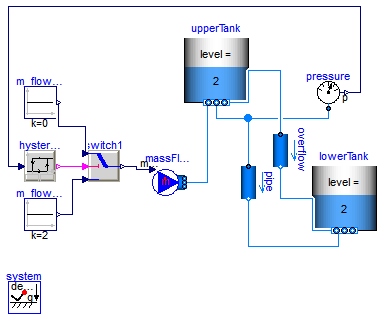
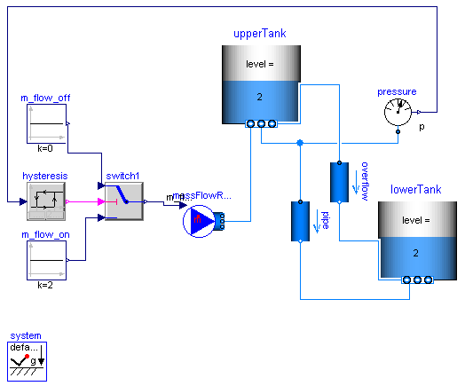
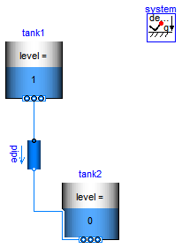

| Name | Description |
|---|---|
| Demonstrating the usage of SimpleTank | |
| Two tanks connected with pipes at different heights | |
| Show the treatment of empty tanks |
 Modelica.Fluid.Examples.Tanks.ThreeTanks
Modelica.Fluid.Examples.Tanks.ThreeTanks


Extends from Modelica.Icons.Example (Icon for runnable examples).
model ThreeTanks "Demonstrating the usage of SimpleTank"
import Modelica.Fluid;
extends Modelica.Icons.Example;
// replaceable package Medium = Modelica.Fluid.Media.Water.ConstantPropertyLiquidWater extends
// replaceable package Medium = Modelica.Media.Water.StandardWaterOnePhase extends
// replaceable package Medium = Modelica.Media.Incompressible.Examples.Glycol47 extends
replaceable package Medium =
Modelica.Media.Water.ConstantPropertyLiquidWater constrainedby
Modelica.Media.Interfaces.PartialMedium "Medium in the component";
Modelica.Fluid.Vessels.OpenTank tank1(
crossArea=1,
redeclare package Medium = Medium,
use_portsData=true,
height=12,
level_start=8,
nPorts=1,
portsData={Modelica.Fluid.Vessels.BaseClasses.VesselPortsData(diameter=
0.1)});
Modelica.Fluid.Vessels.OpenTank tank2(
crossArea=1,
redeclare package Medium = Medium,
use_portsData=true,
height=12,
level_start=3,
nPorts=1,
portsData={Modelica.Fluid.Vessels.BaseClasses.VesselPortsData(diameter=
0.1)});
inner Modelica.Fluid.System system(energyDynamics=Modelica.Fluid.Types.Dynamics.FixedInitial);
Modelica.Fluid.Vessels.OpenTank tank3(
crossArea=1,
redeclare package Medium = Medium,
use_portsData=true,
height=12,
level_start=3,
nPorts=1,
portsData={Modelica.Fluid.Vessels.BaseClasses.VesselPortsData(diameter=
0.1)});
Modelica.Fluid.Pipes.StaticPipe pipe1( redeclare package
Medium = Medium,
allowFlowReversal=true,
height_ab=2,
length=2,
diameter=0.1);
Modelica.Fluid.Pipes.StaticPipe pipe2( redeclare package
Medium = Medium,
allowFlowReversal=true,
height_ab=2,
length=2,
diameter=0.1);
Modelica.Fluid.Pipes.StaticPipe pipe3( redeclare package
Medium = Medium,
allowFlowReversal=true,
height_ab=-1,
length=2,
diameter=0.1);
equation
connect(pipe1.port_a, pipe2.port_a);
connect(pipe2.port_a, pipe3.port_a);
connect(pipe3.port_b, tank3.ports[1]);
connect(pipe1.port_b, tank1.ports[1]);
connect(pipe2.port_b, tank2.ports[1]);
end ThreeTanks;
Modelica.Fluid.Examples.Tanks.TanksWithOverflow
The mass flow rate to the upper tank is controlled by the static pressure at its bottom. The fluid flows through a pipe and forced by different heights from the upper tank to the lower tank.
Additional fluid flows through an overflow pipe if the level of the upper tank exceeds 10m. Initially the overflow enters the lower tank above its fluid level; later on the fluid level exceeds the overflow port.
Note that the number of solver intervals has been increased, accounting for the long simulation time horizon. Otherwise the simulation may fail due to too large steps subject to events. Alternatively the simulation accuracy could be increased in order to avoid errors.
Extends from Modelica.Icons.Example (Icon for runnable examples).
model TanksWithOverflow "Two tanks connected with pipes at different heights" extends Modelica.Icons.Example; import Modelica.Fluid;Modelica.Fluid.Vessels.OpenTank upperTank( redeclare package Medium = Modelica.Media.Water.StandardWater, height=20, level_start=2, crossArea=0.2, nPorts=3, portsData={Modelica.Fluid.Vessels.BaseClasses.VesselPortsData(diameter=0.1), Modelica.Fluid.Vessels.BaseClasses.VesselPortsData(diameter=0.1), Modelica.Fluid.Vessels.BaseClasses.VesselPortsData(diameter=0.1, height= 10)}); Modelica.Fluid.Sources.MassFlowSource_T massFlowRate(nPorts=1, redeclare package Medium = Modelica.Media.Water.StandardWater, m_flow=0.2, use_m_flow_in=true); inner Modelica.Fluid.System system(energyDynamics=Modelica.Fluid.Types.Dynamics.FixedInitial); Modelica.Fluid.Sensors.Pressure pressure(redeclare package Medium = Modelica.Media.Water.StandardWater); Modelica.Fluid.Pipes.StaticPipe pipe( redeclare package Medium = Modelica.Media.Water.StandardWater, diameter=0.02, height_ab=-20, length=200); Modelica.Fluid.Vessels.OpenTank lowerTank( height=20, redeclare package Medium = Modelica.Media.Water.StandardWater, level_start=2, crossArea=1, nPorts=2, portsData={Modelica.Fluid.Vessels.BaseClasses.VesselPortsData(diameter= 0.1),Modelica.Fluid.Vessels.BaseClasses.VesselPortsData(diameter=0.1, height=10)}); Modelica.Blocks.Logical.Hysteresis hysteresis( uLow=1.1e5, uHigh=2.5e5, pre_y_start=true) "mass flow rate signal by pressure control"; Modelica.Blocks.Logical.Switch switch1; Modelica.Blocks.Sources.Constant m_flow_off(k=0); Modelica.Blocks.Sources.Constant m_flow_on(k=2); Modelica.Fluid.Pipes.StaticPipe overflow( redeclare package Medium = Modelica.Media.Water.StandardWater, diameter=0.02, length=200, height_ab=-20); equationconnect(massFlowRate.ports[1], upperTank.ports[1]); connect(pressure.p, hysteresis.u); connect(hysteresis.y, switch1.u2); connect(m_flow_off.y, switch1.u1); connect(m_flow_on.y, switch1.u3); connect(switch1.y, massFlowRate.m_flow_in); connect(upperTank.ports[2], pipe.port_a); connect(pipe.port_a, pressure.port); connect(pipe.port_b, lowerTank.ports[1]); connect(upperTank.ports[3], overflow.port_a); connect(overflow.port_b, lowerTank.ports[2]); end TanksWithOverflow;
Modelica.Fluid.Examples.Tanks.EmptyTanks
Extends from Modelica.Icons.Example (Icon for runnable examples).
model EmptyTanks "Show the treatment of empty tanks" extends Modelica.Icons.Example;Modelica.Fluid.Vessels.OpenTank tank1( redeclare package Medium = Modelica.Media.Water.ConstantPropertyLiquidWater, nPorts=1, crossArea=1, level_start=1, portsData={Modelica.Fluid.Vessels.BaseClasses.VesselPortsData(diameter= 0.1)}, height=1.1); Modelica.Fluid.Pipes.StaticPipe pipe( redeclare package Medium = Modelica.Media.Water.ConstantPropertyLiquidWater, length=1, diameter=0.1, height_ab=-1); Modelica.Fluid.Vessels.OpenTank tank2( crossArea=1, redeclare package Medium = Modelica.Media.Water.ConstantPropertyLiquidWater, nPorts=1, height=1.1, portsData={Modelica.Fluid.Vessels.BaseClasses.VesselPortsData(diameter= 0.1, height=0.5)}, level_start=0); inner Modelica.Fluid.System system; equationconnect(tank1.ports[1], pipe.port_a); connect(pipe.port_b, tank2.ports[1]); end EmptyTanks;